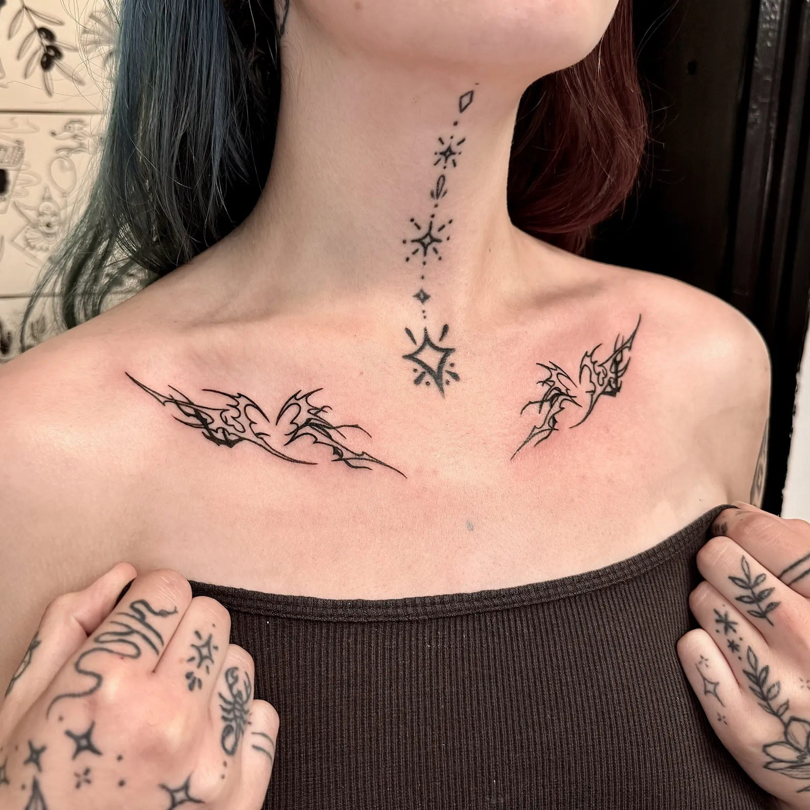
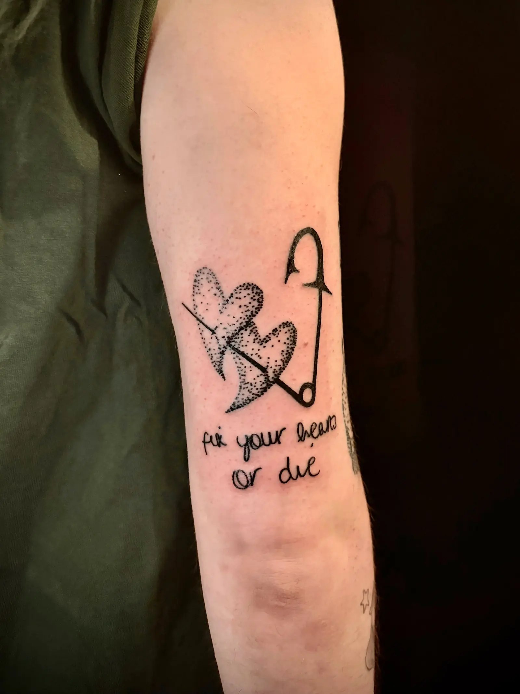
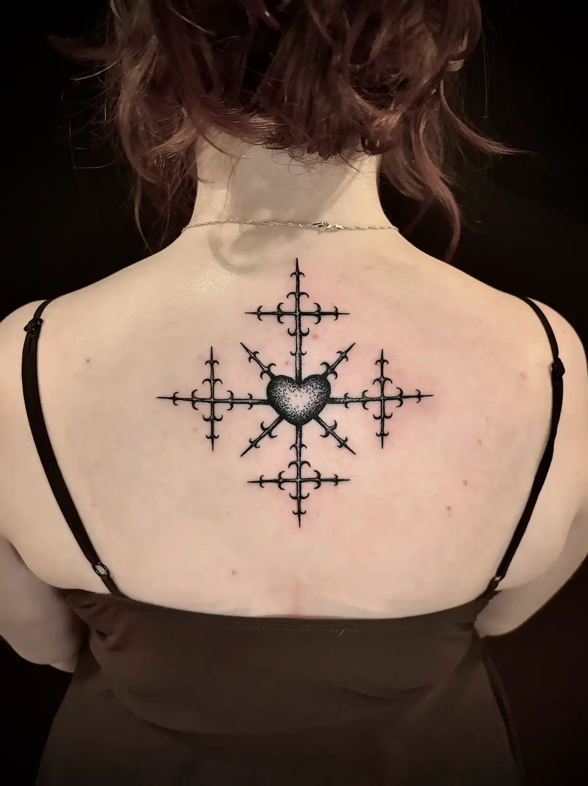
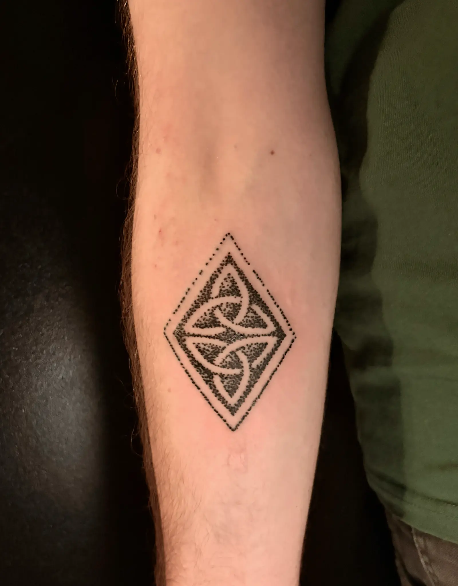
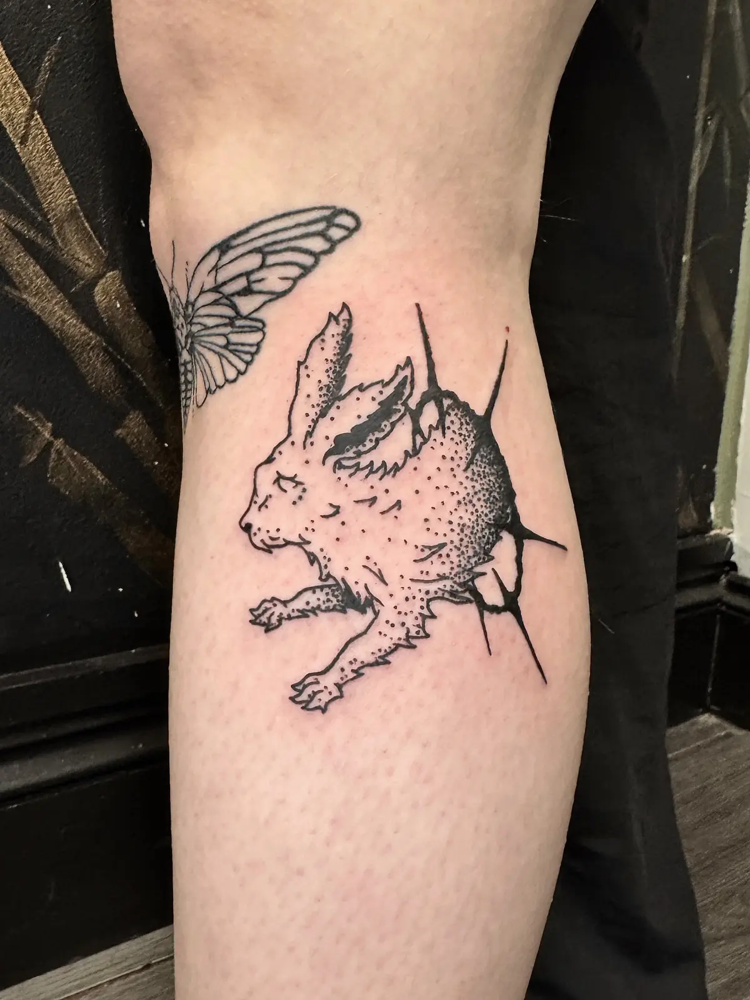
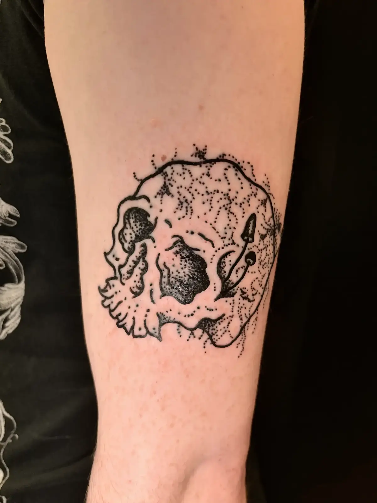

Illustrative blackwork tattoos in Bristol
I'm Luke. I tattoo custom designs and flash at Studio Trinket in the old city, a few minutes from St Nicholas Market. Everyone is welcome here: all skin tones, all bodies, all genders.
Recent work
Fine detail, soft shading and solid black. Custom pieces from your idea, or ready-to-go flash. More on Instagram, where I post frequently.






How booking works
Book straight in through Venue.ink, or send a message on Instagram with your idea, where you'd like it and roughly how big. I'll chat it through with you and come back with a time and a deposit link. Full details on the booking page.
Where to find me
Studio Trinket34 St Nicholas Street, Bristol BS1 1TG